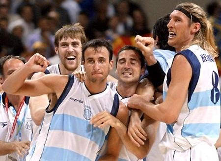

世界其他地区篮球
欧洲篮球
篮球在欧洲的历史可以追溯到1893年，当时巴黎的基督教青年会举行了欧洲大陆的第一场篮球赛，几年后俄罗斯等一些欧洲国家已经出现篮球俱乐部。到了1932年国际篮联（FIBA）初创时，8个最早成员中除了阿根廷外，其余7个都是欧洲国家。
尽管篮球在欧洲的传播有悠久的历史，但直到今天它还远不是欧洲最受关注的职业体育项目，不过由于球员基数大，比赛种类多，涌现出一批优秀球员也是相当自然的。最早在NBA取得成功的欧洲球员是前南斯拉夫得分后卫佩特洛维奇，只可惜这位被称为“球场莫扎特”的球员1993年在德国死于车祸。
在佩特洛维奇之后，欧洲最优秀球员加盟NBA的步伐大大加快，库科奇、萨博尼斯等由欧入美的成员相继成行，先他们而来的迪瓦茨、史伦夫等人也分别在各自的球队里占稳主力位置，这种势头一直延续到今天斯托亚科维奇、诺维茨基、托尼・帕克和加索尔等欧洲球员在NBA的成功。
（斯托亚科维奇 诺维茨基）
（托尼帕克 加索尔兄弟）
NBA树立越多欧洲球员成功的典范，就有更多有天赋的欧洲少年投身篮球，从这个意义上来说，NBA对欧洲篮球的快速崛起功不可没。除此之外，被NBA淘汰的球员也有不少到欧洲联赛中寻找第二次机会，这种双向球员交流虽然并不对等，却也有助于欧美篮球技术的互通。
从欧洲篮坛内部来看，由于欧洲篮球联赛联盟（ULEB）及其独立举办的“ULEB欧洲联赛”，国际篮联在该洲的俱乐部级赛事中并不占有绝对主导地位，只能凭借自己主办的“FIBA欧洲联赛”与之抗衡。这两大联赛的对抗颇有些像早年NBA与ABA两大联盟间的角力，虽然在分裂之初会带来一些动荡，但也有助于各自的水平在竞争中得到提高。
（欧洲篮球联赛联盟）
非洲篮球
很多人的印象，非洲除了长跑，篮球是不行的。这是因为非洲国家整体经济能力和训练水平跟不上。
经济不发达，训练也落后导致非洲的体育事业也远远落后于其他大洲。世界五大洲中，非洲篮球的起步晚，整体水平最低。由于受到经济水平和政局动荡的影响，大多数非洲国家没有自己的篮球联赛。
由于足球是非洲的第一大运动，因此非洲的大多数职业俱乐部都是多栖俱乐部，以足球为主，篮球属于从属地位。但是由于非洲运动员得天独厚的身体天赋，使得他们在赛场上可以上天遁地。借助美国和欧洲联赛的锻炼，非洲国家的篮球运动员得到了很好的发展，一度被世界篮坛视为鱼腩的非洲篮球在世界大赛中的成绩也逐日提高，称为一股不可小觑的力量。
但是，万事总有另外，尼日利亚在过去几年强势崛起，拥有阿米努等几名NBA球员，早已不是中国男篮能够击败的对手。如今非洲篮坛又有了新势力，而且比尼日利亚更猛，他们就是喀麦隆男篮！
喀麦隆男篮在非洲篮坛的存在感并不高，除了在2007年拿到非锦赛亚军之外，基本就是八强的水准。放眼世界篮坛，喀麦隆男篮无疑就是鱼腩部队。非锦赛，喀麦隆男篮有望争夺队史首个冠军！因为在喀麦隆今年参加非锦赛的大名单中，就包括效力于76人的乔尔-恩比德、效力于快船的卢克-巴莫特、效力于猛龙的帕斯卡尔-西亚卡姆。这3名NBA球员都实力不俗，完全有能力帮助喀麦隆男篮统治非洲篮坛，甚至成为世界篮坛的劲旅。
整体非洲篮球水平有限，但是，有优秀的人才和苗子，只要经济上来，他们篮球水平上来也是早晚的事。

（恩比德 西亚卡姆）
美洲篮球
美洲男篮锦标赛是北美洲和中美洲争夺世界男篮锦标赛（现为男篮世界杯）参赛资格而设立的赛事；美洲男篮锦标赛（FIBA Americas Championship）自1980年起在波多黎各圣胡安举办第一届赛事，1993年起改作逢奇数年举办。美国队获得6次冠军傲视群雄。巴西队获得4次冠军，波多黎各获得3次冠军，阿根廷获得2次冠军，墨西哥和委内瑞拉各获得1次冠军。
2014年西班牙男篮世界杯，巴西在16强赛中用一场20分的胜利击溃了阿根廷。看上去这只是两支球队又一次硬碰硬的较量，但其实背后有着更深远的意义。
阿根廷通常都可以在国际大赛中战胜自己的南美对手，但巴西年轻有活力的新生代球员让穿着蓝白条纹服的“黄金一代”感觉有点不堪重负。没有了吉诺比利（Manu Ginobili）和德尔菲诺（Carlos Delfino），普里吉奥尼（Pablo Prigioni）和诺西奥尼（Andres Nocioni）等老球员也跟不上对手的节奏，阿根廷输球似乎意料之中。
这场失利意味着一个时代的结束――虽然我们还可以在刚刚结束的世界杯上看到39岁的斯科拉（Luis Scola）率领球队拿到银牌，但不得不承认，阿根廷男篮的“黄金一代”在5年前就已经落幕告别了。我们还记得这支由吉诺比利和斯科拉领军的球队，向大家展示了篮球是如何通过无间的团队、默契的合作和完美的凝聚力来运转和赢球的。

（阿根廷男篮）
他们在2001年美洲锦标赛上开始发光，作为赛事东道主，阿根廷以9战全胜的姿态摘金，而且除了面对加拿大只赢了9分，其余比赛每一场他们都打出双位数分差，包括39分狂胜由一群大学生组成的美国队。后来我们才知道，这群人从十几岁开始就一起打球和训练，他们不仅是队友还是最好的朋友，有着与其他队伍不一样的特质。当时很多球评家认为这批阿根廷男篮能有一番作为，只是不知道可以走多远而已。
美洲锦标赛是阿根廷迈向世界的第一步，一年后他们来到印第安纳波利斯，在世锦赛上又惊喜了世界一把。阿根廷在首轮小组赛上3战全胜，次轮分组赛最后一场，他们又对上了美国。这次美国派出的是皮尔斯（Paul Pierce）和主帅乔治-卡尔（George Karl）领衔的“梦五队”，虽然没有多少超级巨星坐镇，但纸面实力还是最强。然而，梦五本土夺冠的美梦被后来答应加盟马刺的吉诺比利粉碎了。
（吉诺比利）
吉诺比利被安排首发出场，进攻端他鬼魅的走位和激情的球风令对手捉摸不透防不胜防；防守端，他和桑切斯（Pepe Sanchez）等人联手彻底锁死了美国外线攻击，安德里-米勒（Andre Miller）、巴郎-戴维斯（Baron Davis）和雷吉-米勒（Reggie Miller）三人被防得分别只有13中5、11中3和5中1。最终，阿根廷以87-80击败了梦五队，在美国本土中断了对方58连胜的纪录。赛后梦五队的卡尔教练说：“阿根廷为我们上了一课（put on a clinic）。”
论篮球实力，北美洲的美国和加拿大都天赋满满，南美洲的巴西和阿根廷余威尚存，而身处中美洲的加勒比海域岛国和波多黎各男篮却日渐衰落，多米尼加共和国的篮协组织力度又很欠缺，墨西哥更是天赋平平。 相比之下，巴哈马与其他的中美国家一样，在经济、政治和体育等方面与美国存在纽带式的合作关系，他们热衷于把国内的篮球苗子送去美国，接受美式篮球的培养，近年来已是硕果累累。